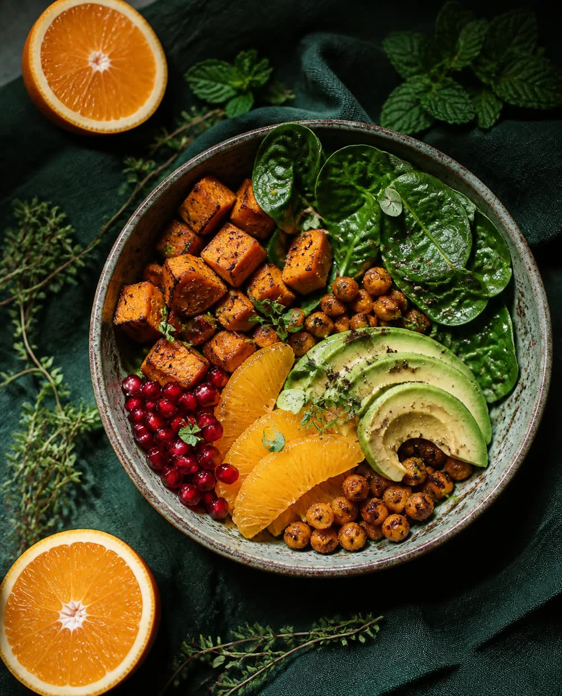

Come sano, pero que esté buenísimo.
Recetas sencillas, de quien lleva más de 20 años elaborando los menús de un hospital materno-infantil.



Cómo trabajo contigo
Hablamos
Me cuentas cómo comes, qué te gusta y qué necesidades o patologías debemos tener en cuenta.
Diseñamos
Preparo un menú a tu medida, con platos que den ganas de cocinar.
Seguimos
Revisamos cómo te va, resolvemos dudas y ajustamos lo que haga falta.
Hola, soy Miriam
Apuesto por la comida saludable, elijo alimentos que nutran, además de intentar potenciar su sabor.
Soy técnico en Dietética y diplomada en Nutrición y Dietética por la Universidad de Barcelona. Llevo más de 20 años trabajando en la unidad de restauración colectiva de un hospital materno-infantil referente. Desde hace años, parte de mi labor en el hospital es elaborar los menús, teniendo en cuenta patologías y guías de nutrición actualizadas. Actualmente me estoy especializando en alimentación vegana.
Además soy una apasionada de la cocina, me encanta inventar, probar y crear mis propias recetas. Me encanta jugar con las preparaciones y mis conocimientos en alimentación me ayudan a realizar combinaciones óptimas para nutrirnos y, además, disfrutar comiendo.
Sígueme en Instagram¿Hablamos de lo que comes?
Escríbeme para reservar tu consulta individual u online.
O escríbeme a hola@tudominio.com